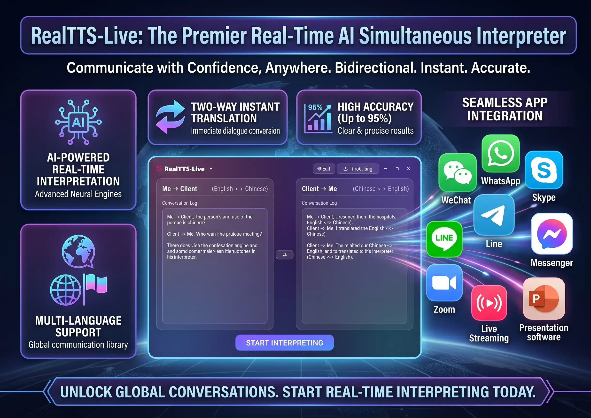
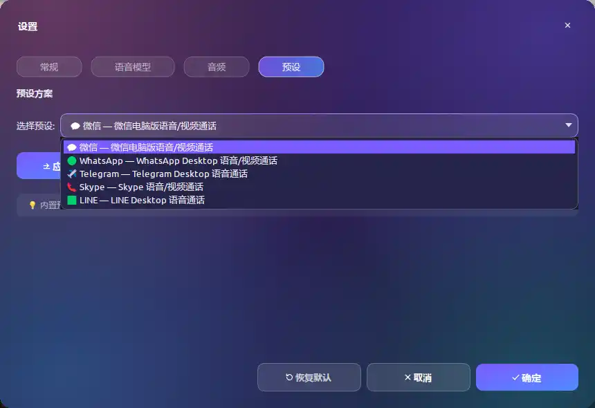
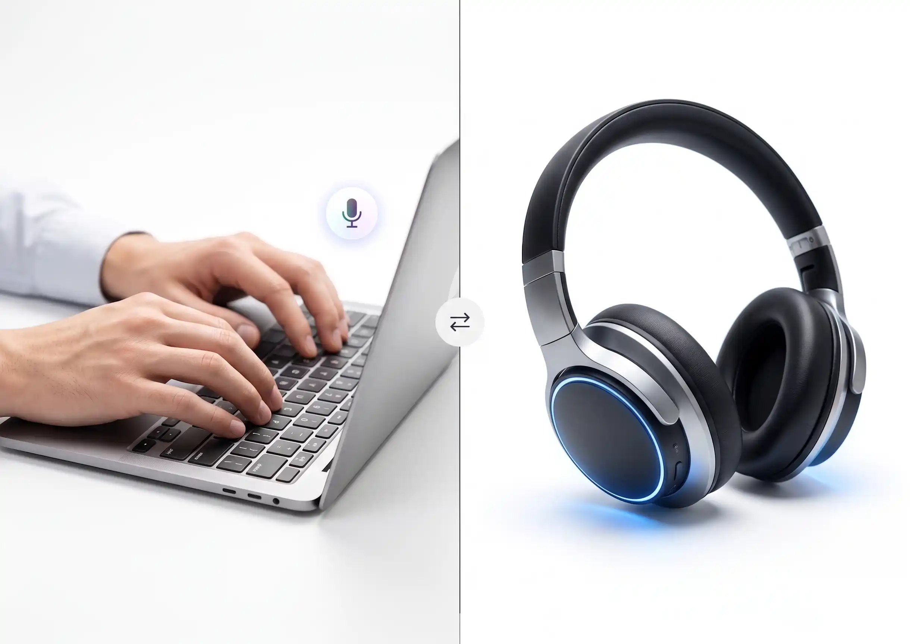
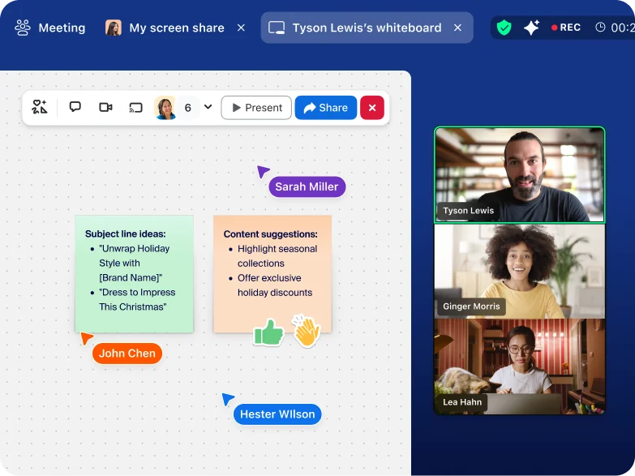

“
我在悉尼做家居进口，上个月跟一家中国工厂谈续约。对方讲中文、语速快，我以前只能靠翻译软件边听边打字，总慢半拍。那天开了 RealTTS，他说的每句中文我都能实时听到英文，我回的英文他也立刻听懂中文。聊到一半他笑说「你今天反应怎么这么快」。那单续约当场签了——量比去年多了 40%。

大家和RealTTS的故事
我在悉尼做家居进口，上个月跟一家中国工厂谈续约。对方讲中文、语速快，我以前只能靠翻译软件边听边打字，总慢半拍。那天开了 RealTTS，他说的每句中文我都能实时听到英文，我回的英文他也立刻听懂中文。聊到一半他笑说「你今天反应怎么这么快」。那单续约当场签了——量比去年多了 40%。
我在奥克兰做礼品零售进口，最大的痛点就是跟中国工厂的视频会。对方说中文，我得一边听一边在聊天框打字让翻译插件翻，经常漏掉关键参数。有次把起订量听错，多进了半柜货。用了 RealTTS 第一次开 Zoom，对面讲中文我直接出英文，我讲英文他那边出中文。整场下来对方以为我请了同传。现在我们四个买手每人都装了。
我今年三月才在莫斯科做起 Ozon 店群，俄语母语但英语一般。第一次跟中国供应商微信语音，手心全是汗。结果 RealTTS 把中文翻成俄文的速度比我打字还快，我甚至有时间想怎么还价。那个供应商后来成了我最稳的一手货源。现在回想，没有这工具我连第一单都接不住。
去年黑五，我在马德里的网店发出的一盒粉饼碎了，一个中国代购在平台留言全是感叹号，说要投诉。我以前用翻译软件回，越回越错，她觉得我在敷衍。后来开了 RealTTS 直接语音，我才听明白——她气的不是那点钱，是觉得「你们根本不在乎我」。我重新发了一份，还手写了中文道歉卡。第二天她自己删了差评，上个月又下了两单。现在我售后一律先通话，不打字。
一家中国工厂的报价比我的预算高出快两成，怎么谈都不肯动。我英语不够用，以前这种局面我只能咬牙加预算。这次开着 RealTTS，他每一句中文我都实时看到英文，才听出他反复提的是「上一个新西兰客户说好三柜、最后只提了一柜」——他不是想多赚这点差价，是怕我的量不靠谱。我把过去两年的销量和季度提货计划甩过去，价格按我原来的预算签的，还多签了一份年度框架。那次我才懂：听不懂，就只能靠加钱补。
我在莫斯科帮一家中国跨境公司管仓库，老板只说中文，我只会俄语。以前所有指令都得经过中国那边的同事转述，「周三还是下周」经常传错，错发漏发没断过。我自己装上 RealTTS 后，直接在电脑上跟老板语音——拣货、盘点、哪个件要退，我一句俄语他那边出中文。头一个月发货准确率就上来了，中国同事也说终于不用天天当二传手。现在老板人在杭州，管这仓像管楼下库房。
今年春交会，我在一家中国展商的摊位前停下。对方英文磕磕巴巴，我的中文也一般，放以前我基本递张名片就走了。那天我电脑开着 RealTTS，直接把西班牙语翻成中文跟对方聊，十分钟下来他不但发了 catalog，还当场问我 MOQ 和船期。展会最后一天我就下了试订单。回来算过，那一届起码有三四个这样的展商，以前全放跑了。
去年刚接手家族在悉尼的进口生意，一个中国供应商都没有。我硬着头皮在 WhatsApp 上加了一堆中国工厂老板，对方基本只说中文，有的还带着口音，我发的开发信全靠机翻，石沉大海。后来装了 RealTTS，我把话术用英文写好，它实时翻成中文发过去，有人回了我就直接语音聊。第一个月谈下来 3 家供货代理，其中一个广东的当月出货就过万美金。现在我 WhatsApp 里 200 多个中国供应商联系人，一半是它帮我聊下来的。
我在深圳做 3C 配件出口，客户八成在欧美。以前跟老外视频验货，我英语磕巴，全靠提前背稿，对方一追问就卡壳。装了 RealTTS 之后，他讲的英文实时出中文，我回的中文他那边出英文，第一次开摄像头验厂就顺顺当当地把 MOQ 和交期敲定了。上个月因为误会需求发错规格的那类退货，直接少了六成。
我在义乌做饰品小商品，客户大半是中东和拉美的。他们发来的西语、阿语、葡语消息，我以前只能机翻猜个大概，经常报错价、发错货。用了 RealTTS，客户语音我直接听到中文，我说的每句中文他那边变成他的母语。上个月一个迪拜客户视频里当场加了三款新品，这种单子以前我根本接不住。
我在佛山开家具厂，主打出口俄罗斯和澳洲。我俄语、英语都不行，以前跟老外谈都是女儿在旁边当翻译，她一忙我就只能干等。现在厂里电脑开着 RealTTS，买家视频里说俄语、英语，我直接看中文；我比划着说中文，他那边出他的语言。上周一个莫斯科客户视频验厂完，当场下了两柜的试订单。
我在圣保罗做跨境美妆，客户一半在说葡语。以前收到中国供应商的报价单，我只能机翻猜意思，经常把最小起订量看错。用了 RealTTS，供应商发来的中文语音我直接听到葡语，我回的葡语他那边出中文。上周谈下一家东莞的代工厂，价格比老渠道低了快两成。
我在柏林进口小型机床，供应商全在中国。视频验厂时对方讲中文，我英语一般，以前得请翻译，一小时收费不便宜还慢半拍。装了 RealTTS，他说的每句中文实时变德文，我回德文他出中文。第一次没请翻译就把一台数控机的参数和交期敲定，一年省下不少翻译费。
我在洛杉矶做亚马逊家居，工厂都在深圳。以前跟供应商开视频，我英语还行但听中国同事讲方言就懵。RealTTS 把我听不懂的中文实时翻成英文，我回的英文他那边出中文。有次对方随口说漏了「这款下周要涨价」，我提前下了单，省了一笔。
我在曼彻斯特做自有服装品牌，面料和代工都在中国。打样阶段要和工厂反复确认克重和色号，以前全靠邮件来回，一个色差能拖两周。用了 RealTTS 直接语音沟通，听中文出英文，我说的英文出中文，打样周期从三周压到九天。
我在巴黎做美妆买手，每年飞几次广州和义乌。和工厂老板吃饭谈条件，对方基本只说中文，我的中文刚够点菜。RealTTS 把对话实时翻成法文，我回法文他出中文。春交会那趟，我靠它当场锁了三个独家配方，回来团队都惊了。
我在多伦多卖户外装备，供应商在浙江。冬天是旺季，补货慢一天都丢单。以前微信语音里听不懂中文，只能等对方打字，常常错过补货点。RealTTS 让我直接听英文版的中文语音，补货从「猜」变成「准」。去年黑五没断过货。
我在伊斯坦布尔做建材出口到海湾国家，源头工厂都在中国。跟中国供应商谈瓷砖和卫浴的价格，对方语速快还带口音，我英语磕巴。RealTTS 把我听不懂的中文翻成土耳其文，我回土文他出中文。第一个月就谈下两家佛山厂的代理价。
我在孟买做纺织品进口，纱线和坯布大多来自中国。跟绍兴的供应商视频，对方讲中文我完全抓瞎，以前靠中间商转述，每层都加价。装了 RealTTS，中文语音直接出英文，我回英文出中文。砍掉中间商后，每柜成本降了将近一成。
我在曼谷做进口零食连锁，中国的辣条和魔芋爽在年轻人里很火。跟广州供应商确认配料表和保质期，以前用翻译软件经常翻错，闹过一次标签违规。RealTTS 让我直接听懂中文，回泰文他出中文，合规沟通一次到位。
我在胡志明做电子产品代工，芯片和连接器从深圳进。跟供应商对账、确认交期，对方讲中文我听不懂，以前全靠邮件慢吞吞。RealTTS 把中文实时翻成越南文，我回越文出中文。对账时间从三天压到半天，错单也少了。
我在墨西哥城做汽车配件进口，货源九成在浙江和广东。跟中国工厂谈型号和认证，对方只说中文，我的西语客户又等不及。RealTTS 让我中文语音听西语、回西语出中文。第一次独立拿下一家温州的制动器厂，没再借翻译公司。
我在雅加达做母婴电商，中国的奶瓶和推车性价比最高。跟义乌供应商谈定制包装，对方讲中文我一句不懂，以前靠图表比划。RealTTS 把中文翻成印尼文，我回印尼文出中文。首批定制款上线当月就卖空，复购也很稳。
我在拉各斯做建材贸易，钢材和管材从中国进。供应商视频里讲中文，我英语还行但听不懂中文术语。RealTTS 让我直接听英文版中文，回英文出中文。谈下一家唐山厂的离岸价，比老渠道每柜省了三百多美金。
我在利雅得做家居连锁，中国的家具和灯饰很受欢迎。跟佛山工厂确认设计和交货，对方只说中文，我的阿拉伯语同事又忙。RealTTS 把中文翻成阿拉伯文，我回阿文出中文。一个新系列从打样到上架，比往年快了一个月。
我在华沙做玩具进口，义乌和汕头是主货源。跟工厂确认安全和认证标签，对方讲中文我听不懂，以前邮件来回耗一周。RealTTS 让我中文语音听波兰文、回波兰文出中文。旺季备货节奏第一次踩准了，没再断货。
我在米兰做皮具买手，广州和东莞的厂子工艺不错。跟老板谈皮料和工时，对方讲中文带着乡音，我英语卡壳。RealTTS 把对话翻成意大利文，我回意文出中文。春装那季我抢到一批限量皮料，同行都没拿到。
我在布里斯班做宠物用品，中国的猫爬架卖得最好。跟供应商确认材质和安全，对方讲中文我听不懂，以前靠机翻出错。RealTTS 让我直接听英文版中文，回英文出中文。一款新猫窝从询盘到下单只用了四天。
我在圣地亚哥做数码配件进口，深圳的耳机和充电宝是爆款。跟工厂谈型号和 warranty，对方讲中文我完全不懂。RealTTS 把中文翻成西语，我回西语出中文。第一次没请翻译就敲定了一家宝安厂的年度框架。
我在开普敦做采矿设备贸易，中国的钻机和泵很有性价比。跟江苏供应商谈规格和船期，对方讲中文我靠翻译软件跟不上。RealTTS 让我中文语音听英文、回英文出中文。一台钻机的配置单当天就核完，没再拖。
语言不同，交易不该停在原地。
当双方无法直接理解，价格、交期和信任都很难继续。实时同声传译，让沟通重新回到交易本身。
没有实时翻译时
需求反复确认，报价迟迟无法推进。
使用 RealTTS 后
双方直接沟通规格、价格与交期。
没有实时翻译时
产品细节讲不清，客户犹豫，沟通容易中断。
使用 RealTTS 后
产品卖点、售后和交付一次讲明白。
没有实时翻译时
物流、包装和付款细节需要多轮转述。
使用 RealTTS 后
关键节点即时确认，合作沟通更顺畅。
少一次误解，多一次成交机会。
跨境生意真正昂贵的，不是翻译费用，而是听错需求、报错价格、漏掉关键信息后失去的订单。
不用等翻译，不用反复打字。客户问价格、数量和交期，当场回应。
及时、连贯地表达方案和态度，让海外客户感受到你的响应速度与执行力。
原文与译文实时记录，会后可导出复盘。需求、报价、承诺都有依据。
沟通，不该等待。
双向语音实时识别、翻译与自然播报。你专注谈判、选品和客户关系，RealTTS 负责语言。
秒级响应
让对话保持自然节奏。
Signal response种常用语言
覆盖主流跨境贸易市场。
Global coverage路同步传译
你与客户都能听懂彼此。
Two-way audio声音，依然是你。
创建专属音色，让翻译后的语音保留熟悉的表达与个性。跨语言，也不失真诚。
你的原声
翻译后的你
复杂的技术，简单的体验。
常用沟通工具快速配置。保存不同客户和市场的语言、音色与设备方案，下次一键恢复。

原文与译文实时显示。会议结束后一键导出，报价、需求和承诺不再遗漏。
独立处理双方音频路径。你的翻译传给客户，客户的翻译送入耳机，彼此清晰，互不干扰。

简单到像面对面说话。
选择麦克风、耳机和沟通工具，或直接应用预设。
设定你与客户的语言和声音，一键交换方向。
点击开始，像平常一样说话。其余交给 RealTTS。
为跨境业务而生。
实时听懂需求，准确表达方案。

数字、交期与条款，沟通更清楚。
快速响应售前与售后问题。
不挑软件，支持任意可自定义音频设备的工具
RealTTS 通过虚拟音频设备工作。只要你的聊天或通话工具允许选择麦克风或扬声器——例如微信、WhatsApp、LINE、Zoom、Teams、Skype 等——就能直接实现实时双向翻译，无需让客户安装任何新软件。
微信 · WhatsApp · LINE · Zoom · Teams · Skype —— 支持音频设备选择，即可无缝使用。
全球跨境团队的共同选择。
累计服务用户
覆盖国家与地区
平均用户评分
累计翻译时长（分钟）
与全球领先的跨境电商、物流与支付平台并肩协作
来自世界各地用户的真实反馈。
可配合常见的视频会议、即时通讯和语音通话工具使用，包括微信、WhatsApp、Telegram、Skype、LINE、Zoom 等。
不需要。RealTTS 在你的 Windows 电脑上运行，客户继续使用原有的沟通工具即可。
支持。双方的原文与译文会实时显示，并可在会议结束后导出为对话记录。
耳机可明显减少扬声器回声进入麦克风，让双向识别和翻译更稳定、更清晰。
RealTTS 支持保存常用配置为预设。你可以把常用的语言对、音色、语速等设置存为一键预设，切换场景时直接调用，无需每次重新调整。
简单的定价，按设备计费
按设备按月计费，随时升级。价格已含实时双向翻译、记录导出与使用支持。
现在就把语言障碍变成订单机会
联系我们获取购买咨询和配置支持。告诉我们你常用的平台和目标语言，我们会给出适合的使用方案。
微信扫码联系
备注“RealTTS”，方便快速处理